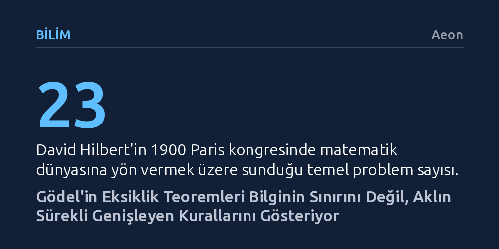

BILIM · Aeon · 2026-10-16
Gödel’in eksiklik teoremleri yaygın inanışın aksine bilginin aşılamaz sınırlarını değil, matematiğin kurallarla sürekli genişleyen yapısını kanıtlıyor. Güncel mantık araştırmaları, her matematiksel sistemin kendi tutarlılığını meşru eklemelerle aşarak yeni doğrular inşa ettiğini gösteriyor.
Gödel'in teoremlerini insan aklının çaresiz kaldığı mutlak bir sınır olarak görmek yerine, kurallar inşa ederek hakikati adım adım genişletme gücümüzün bir kanıtı olarak kavramamızı sağlar.

1930 yılı sonbaharında David Hilbert, Königsberg'de bir radyo mikrofonunun karşısına geçip aklın ve matematiğin gücünü savunan tarihi bir konuşma yaptı. Emekliliğe yeni ayrılmış olan ünlü matematikçiye göre matematik, aksiyomları doğru belirlenmiş kusursuz bir simge oyunuydu ve hiçbir hakikat insan aklına sonsuza dek kapalı kalamazdı. Konuşmasını bitirirken kurduğu ve ileride mezar taşına kazınacak olan iki cümle bu mutlak inancın simgesiydi: "Bilmek zorundayız. Bileceğiz."
Fakat Hilbert'in bu ilanından yalnızca bir gün önce, aynı kentteki mütevazı bir akademik toplantıda 24 yaşındaki Avusturyalı mantıkçı Kurt Gödel tarihin yönünü değiştirdi. Gödel'in Eksiklik Teoremleri, aritmetiği temellendirmeyi amaçlayan hiçbir tutarlı kural kümesinin tüm doğruları kapsayamayacağını kanıtlıyordu. Belirlenen kurallar ne kadar güçlü olursa olsun, sistemin içinde doğru olan ancak o sistemin araçlarıyla ispatlanamayan önermeler kaçınılmaz olarak bulunacaktı. 20. yüzyıl mantığının bu dönüm noktası, matematiği kendi içine kapalı ve eksiksiz bir kale olarak tasarlayan Hilbert programını temelinden yıktı.
Bu krizin arka planı aslında iki yüzyıl öncesine, Immanuel Kant'ın David Hume tarafından dogmatik uykusundan uyandırılmasına kadar uzanıyordu. Hume, geleceğin geçmişe benzeyeceğine inanmak için hiçbir rasyonel gerekçemiz olmadığını, bunun yalnızca bir zihin alışkanlığından ibaret olduğunu öne sürmüştü. Kant ise Saf Aklın Eleştirisi ile radikal bir çözüm geliştirdi: İnsan zihni dünyayı kendi başına değil, ancak zihnin kurucu kategorileri aracılığıyla kavrayabilirdi; nedensellik dünyada hazır bulduğumuz değil, deneyimi anlamlı kılmak için zihnimizin sunduğu bir yapıydı. Matematik de tanımların mekanik bir açılımı değil, zihnin kurduğu bir inşaydı.
20. yüzyılın başlarında Bertrand Russell ve Alfred North Whitehead, bu zihinsel temeli saf mantığa dönüştürmek amacıyla üç ciltlik devasa Principia Mathematica yapıtını kaleme aldılar. Hemen ardından Viyana Çevresi'nin mantıkçı pozitivistleri felsefeyi iki alana sıkıştırdı: Deneyle sınanan olgular (sentetik) ve tanımların açılımından ibaret olan matematik (analitik). Onlara göre matematik dünyaya yeni bir bilgi eklemiyor, su boruları gibi mevcut bilgiyi taşıyordu. Hilbert 1900 yılında Paris'te ortaya koyduğu meşhur 23 problem arasında aritmetiğin tutarlılığının kanıtlanmasını istemişti; ancak Gödel'in teoremleri matematiğin basit bir tanımlar açılımından ibaret olmadığını ve hiçbir zaman tamamen kapatılamayacağını gösterdi.
Gödel'in bulgusu karşısında yerleşik matematik felsefesi kolay bir yola saptı: Doğruluğu koruyup ispatı feda etmek. Bu Platoncu kabule göre, insan zihninden bütünüyle bağımsız nesnel bir matematiksel hakikatler evreni vardı ve aksiyomatik sistemlerimiz bu evrenin yalnızca bir bölümüne erişebiliyordu. Ancak bu varsayım Kant'ın uyarısını yeniden alevlendirdi: Eğer matematik zihinden tamamen bağımsız metafizik bir alansa, zihnimizin ürettiği doğa bilimlerine nasıl güvenilir bir zemin sağlayabiliyordu? 1970'lerde İngiliz filozof Michael Dummett, çıkarımın nasıl gerekçelendirileceği sorusunu ele alarak bu metafizik sığınağı sorguladı.
Dummett, geç dönem Ludwig Wittgenstein'ın fikirlerini geliştirerek bir ifadenin anlamının, konuşucuların onu dilsel pratik içinde kullanma ve ortaya koyma biçiminde saklı olduğunu savundu. Bir çocuk "kırmızı" sözcüğünün anlamını ışık dalga boylarını veya metafizik renk teorilerini öğrenerek değil, kırmızı nesneleri işaret edip topluluk içinde düzeltilerek kavrar; anlama edimi pratiğin bizzat kendisidir. Dummett bu yaklaşımı ortaya koysa da tamamlanmış bir matematiksel çerçeve kuramamıştı. 2005 yılında İsveçli mantıkçı Tor Sandqvist, çıkarım kurallarının geçerliliğini zihinden bağımsız aşkın bir doğruluk alanına hiç başvurmadan, tamamen öne sürme pratikleri üzerinden matematiksel olarak gerekçelendirerek bu boşluğu doldurdu.
Londra Üniversite Koleji'ndeki (UCL) bilgisayar bilimcileri ve mantıkçılar, Sandqvist'in bu modelini geliştirerek Gödel'in Eksiklik Teoremleri hakkında çığır açıcı bir kavrayışa ulaştılar: Gödel'in sonuçları bilginin aşılamaz sınırlarını anlatmıyordu. Bir aksiyom sistemi, bir devletin anayasası gibidir. Bir anayasanın neyi tanımladığı, onun toplumun pratikleri doğrultusunda nasıl tadil edildiğiyle belirlenir. Principia Mathematica dizgesini kullanmak, onun tutarlı olduğunu eylemsel olarak peşinen kabul etmektir; dolayısıyla sisteme "bu sistem tutarlıdır" aksiyomunu eklemek konuyu değiştirmek değil, pratiğin zaten gerektirdiği bir ilkeyi anayasaya sadakatle açıkça yazmaktır.
Gödel'in teoremleri genişletilmiş bu yeni anayasa için de geçerlidir ve her defasında kanıtlanamayan yeni bir tutarlılık ifadesi ortaya çıkar; ancak bu bir zaaf değil, Dummett'ın süresiz genişletilebilirlik dediği dinamik yapıdır. Kavramlar önceden sınırları çizilmiş kapalı kutular değildir; her meşru ekleme bir sonraki adımı mümkün kılar. Gödel bilginin nihai tavanını değil, anayasanın belirli bir baskısının sınırlarını göstermiştir. Hakikat önceden hazır bekleyen ulaşılamaz bir zirve değil, kurallar inşa ettikçe uzanan bir yoldur. Hilbert'in "Bileceğiz" iddiası, sistemlerin kapalı olmasından ötürü değil, aklın kendi kurallarını sürekli ve tutarlı biçimde genişletebilme kudretinden ötürü yaşamaya devam etmektedir.